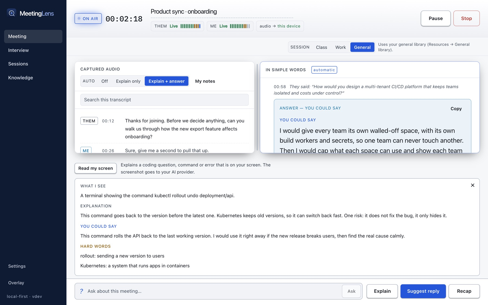
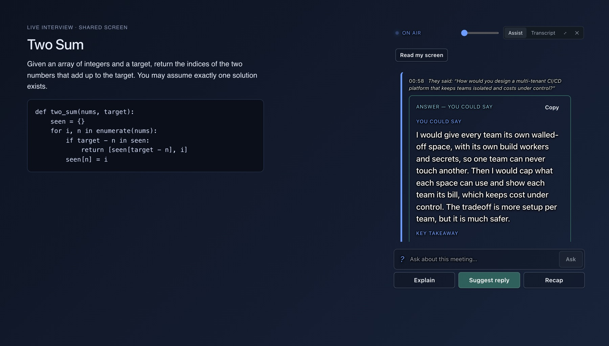
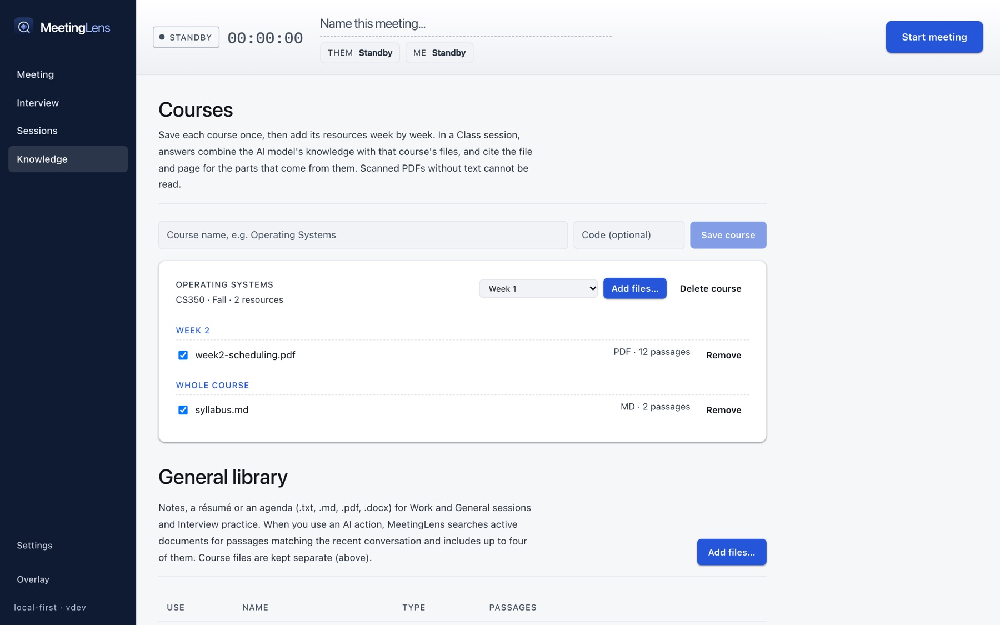
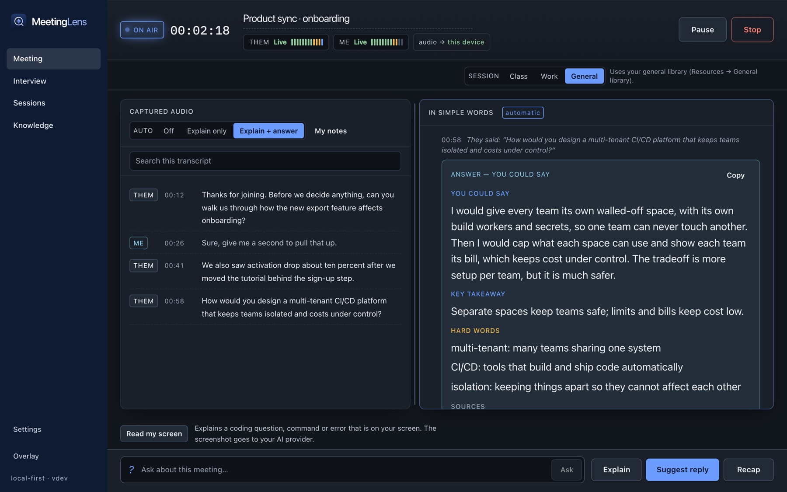
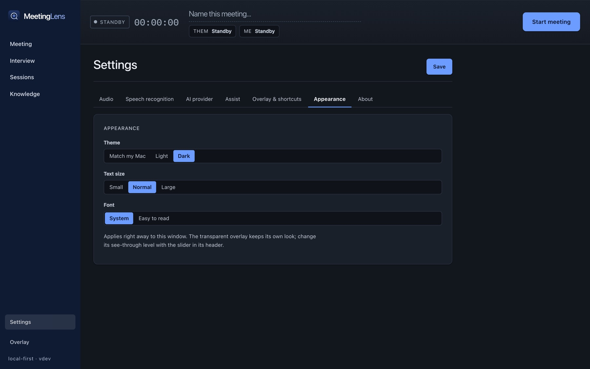

Simple words, automatically
When someone finishes a thought, its meaning appears in short, plain sentences a 10-year-old could follow.
Meeting and interview assistant · Mac & Windows
MeetingLens listens to your call, explains what others say in simple words as they say it, and writes an answer you can say when someone asks you a question. It can even read the code or command someone shows on your screen.
Version 0.1.3 · free · Mac: 9.5 MB, macOS 13+, Apple Silicon · Windows: 6.1 MB, Windows 10/11 · install steps

What it does
Everything works while the call is still going, so you never have to switch away or ask someone to repeat themselves.
When someone finishes a thought, its meaning appears in short, plain sentences a 10-year-old could follow.
Questions get a spoken-style answer with a key takeaway and sources. It never invents your own experience, and asks you for facts it cannot know.
Every answer checks itself for difficult words and adds a short plain meaning for each one, so you can say them with confidence.
Press Start interview and each question the interviewer asks is answered for you, in the style you pick: Simple, Professional, Technical or STAR.
When someone shows a coding problem, a command or an error and asks you to explain it, one button or shortcut explains what is on screen.
A small always-on-top window that can be fully see-through, so only the words show over your call. It opens by itself when you minimize the app.
Add PDF, Word, text or Markdown files. Class sessions use one course and one week, and answers cite the file and page, checked by the app.
Every meeting and practice session is saved on your computer. Download the scripts, key points, references and transcript as Word, Markdown or text.
Use local speech and local AI and nothing leaves your computer. Cloud services are your choice, and the app always says where audio and text go.
Meeting
The other side and your own microphone are captured separately, so the transcript always shows who said what. The reading pane writes each meaning and answer where you can see it, and it stays put while you read.

Interview
Interview has its own screen. Start it, and the interviewer's questions are answered as they are asked, using coaching skills for cloud and DevOps, system design, AI engineering and coding.
Use it for practice and preparation, and follow the rules of your interviewer or employer.
Read my screen
When someone shares a coding problem, a terminal command or an error, MeetingLens reads your screen and explains it: what it is, what it means, and what you could say.


Overlay
Minimize MeetingLens and a floating window appears beside your call. Set it fully see-through and only the answer words show over whatever is behind them.
Knowledge and sessions
Save each course once and add its files week by week. During a Class session, answers combine your own expert knowledge with those files, and show which file and page they came from.

Made to be read
Match your Mac or choose a theme, text size and font in Settings. Colors are checked for contrast in both themes.


See it
A short walkthrough of the Meeting, Interview, Read my screen and Overlay screens, plus the original recording of a real call.
Walkthrough built from real captures of version 0.1.3. Silent.
A real call, captured screen by screen, with audio transcribed by whisper.cpp and answers from a local model. It shows the earlier look of the app.
How it works
Privacy
With local speech and a local model, no audio or text leaves your computer.
Indicators show where audio goes, and the app is clear when text or a screenshot is sent to your AI provider.
Recordings are off unless you turn them on. Screenshots are deleted right after they are read.
MeetingLens only shows text to you. Nothing is typed or said into your call.
Some places require everyone's consent to record or transcribe. Tell participants when you use it.
Get it
Early version 0.1.3. Free for Mac and, as an experiment, Windows.
Version 0.1.3 · 6.1 MB · Windows 10/11, 64-bit. Built and unit-tested on a Windows server, not yet tried on a real laptop. Expect rough edges. Read my screen is Mac-only for now.
whisper-cli.exe) and set the paths in Settings → Speech recognition.Open MeetingLens.dmg from your Downloads, drag MeetingLens to Applications, then open it. macOS will ask you to approve it once. See the steps
Run MeetingLens-Windows-Setup.exe from your Downloads. If Windows says it protected your PC, click More info → Run anyway. See the steps